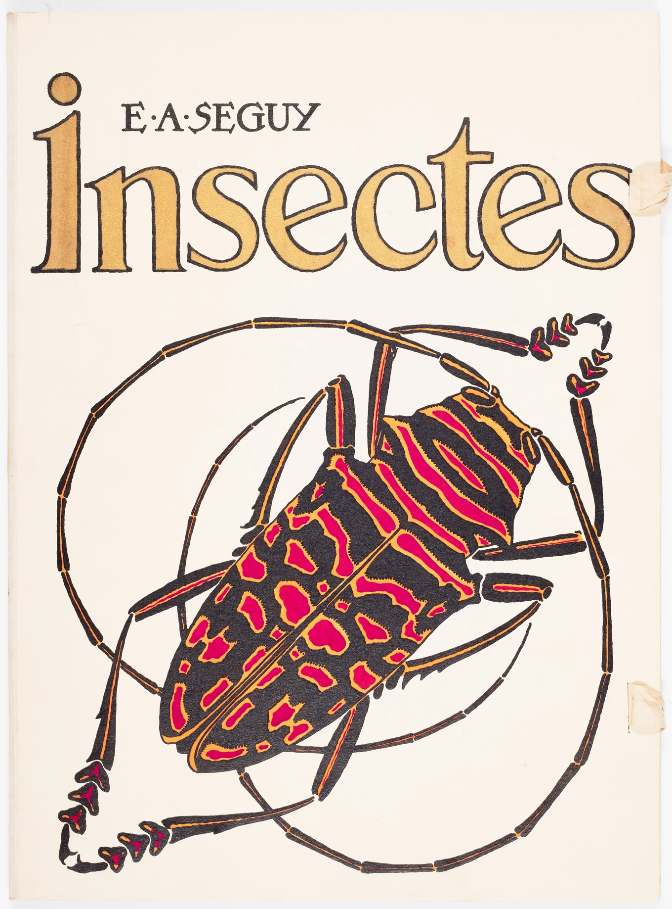

[ ARCHIVE SLOT ]
Welcome to the DigiBooks Library, a repository of historical publications and portfolios at The Wolfsonian–FIU. Tap or click a book to see its description, then tap or click again to open it. Swipe or click to turn the pages.
